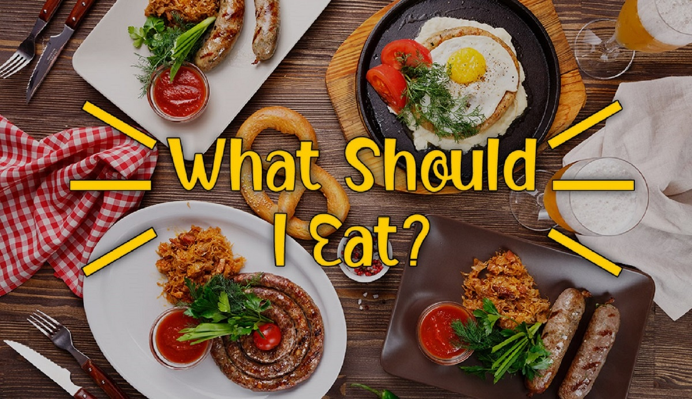

Good nutrition is a life style not a diet. It starts witha new way of thinking about food. Think of your body as a vehicle that uses food for fuel. Fill your tank with the right type of fuel.
Do not approach your nutrition plan as a diet plan, but rather, a life style change, if you make a permenent change. You will see big results. The key to success is a daily focus on your goal.
Portion your meals and track your calories.There are many free mobile apps to help you track your activity level and calories.
Control impulsive urges to buy junk food. Instead allow yourself to one cheat meal each week.
What to Eat

Use the following as guidelines
Protein such as meat, egg, and lean red meat.
Vegetables, but avoid corn and peas.
Fruits
Fats, such as olive oil nuts and scodes
Limit the consumption of bread, pastas, white potatoes and processed food. these foods are high in cabohydrates.
When you shop for groceries, shop the outside and buy organic when possible. stock up on fresh vegetables, almond flour, and finx seed
Check out our meal of the week for fresh meal ideas.
Combine all ingredients in a plastic bag and marinate for atleast an hour. Preheat oven for 350 degrees, make chicken for 30 to 35 minutes or until juices run clear. Broil on high for two munites or until it turns brown. Serve with fresh side salad.